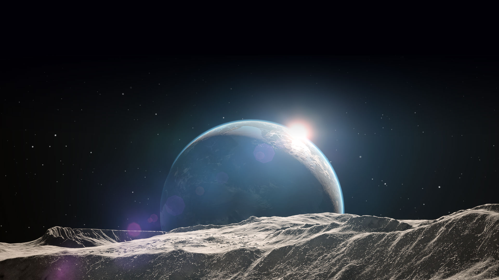

Kerbal Space Program

Build spacecraft, fly them, and try to help the Kerbals fulfill their ultimate mission of conquering space.
Kerbal Space Program (KSP)
is a space flight simulation video game developed by Mexican developer Squad for Microsoft Windows, macOS, Linux, PlayStation 4, and Xbox One.
In the game, players direct a nascent space program, staffed and crewed by green humanoid aliens known as "Kerbals". The game features a realistic orbital physics engine, allowing for various real-life orbital maneuvers such as Hohmann transfer orbits and orbital rendezvous.